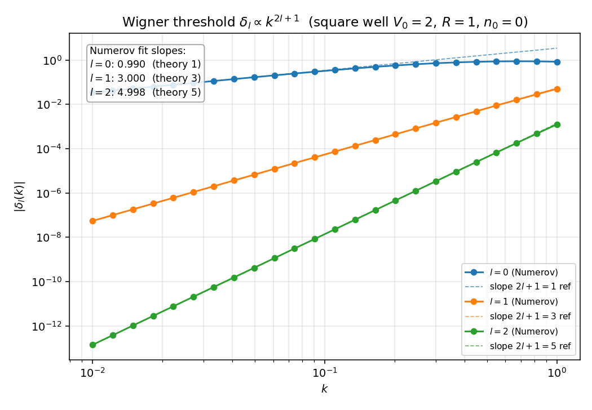
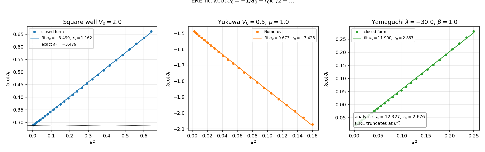
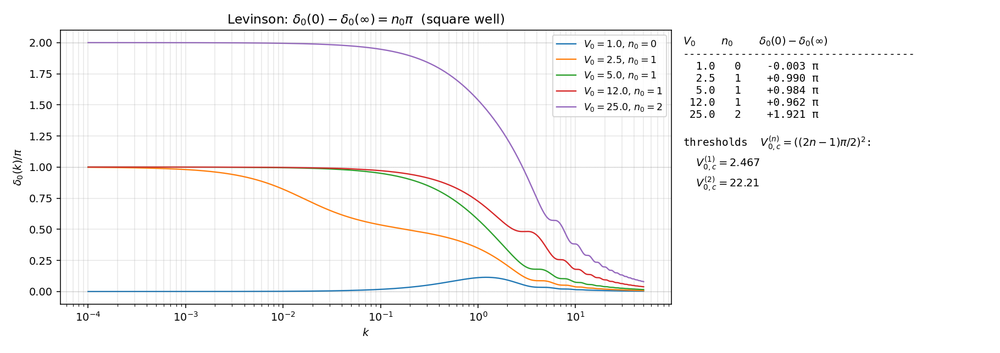
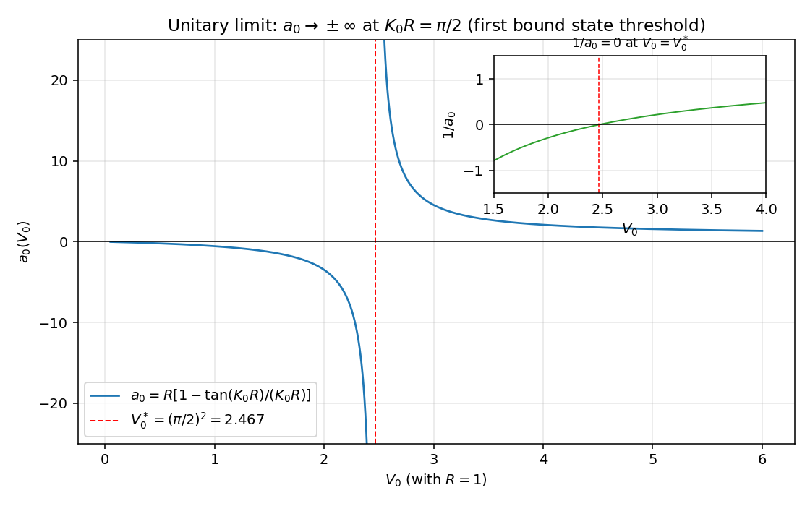

有效力程展开与 Levinson 定理的数值演示#
主线 ../11_effective_range_levinson.zh.md 把 Jost 函数 \(F_l^+(k)\) 在 \(k = 0\) 邻域的 Taylor 展开钉成两条解析定理：(Wigner) 阈值定律 ../11_effective_range_levinson.zh.md:51 给 \(\delta_l(k) \to -k^{2l+1} a_l\)；(ERE) 标准展开 ../11_effective_range_levinson.zh.md:91 给 \(k^{2l+1}\cot\delta_l = -1/a_l + r_l k^2/2 + \ldots\)。同一篇还把 Levinson 定理 ../11_effective_range_levinson.zh.md:247 提升为完整证明 \(\delta_l(0) - \delta_l(\infty) = n_l \pi\)，并把 unitary limit ../11_effective_range_levinson.zh.md:316 与零阈值 \(1/a_0 = 0\) 关联起来。这一篇是它的数值具例。
约定 \(\hbar = 1\)、\(2m = 1\)、\(E = k^2\)、\(R = 1\)。代码不用 scipy，只 numpy + matplotlib。Numerov 引擎沿用 04_yukawa.py 与 06_numerical_pipeline.py 的方案；方阱与 Yamaguchi 的闭式相移直接复用 02_square_well_3d.zh.md:62 与 05_separable_rank1.zh.md:91 的解析公式。
Wigner 阈值定理：\(\delta_l \propto k^{2l+1}\)#
演示设置#
取方阱 \(V(r) = -V_0 \theta(R - r)\)，\(V_0 = 2\)、\(R = 1\)。\(V_0\) 选在 s 波束缚态阈值 \(V_{0,c}^{(1)} = (\pi/2)^2 \approx 2.467\) 之下，确保 \(n_0 = 0\)，所以 (Levinson) 给 \(\delta_l(0) = 0\)，从而 \(\delta_l(k)\) 在 \(k \to 0\) 直接展示 \(k^{2l+1}\) 的阈值行为，无需相移 unwrap 校正。
Numerov 积分在 \(r \in (0, 30]\) 用 \(N = 15000\) 网格求解 \(u'' + [k^2 - V - l(l+1)/r^2] u = 0\)，对 \(l = 0, 1, 2\)、\(k \in [10^{-2}, 1]\)（24 个对数等间距点）抽相移 \(\delta_l(k)\)。匹配采用主值分支 \(\arctan\)（不是 \(\arctan2\)），把"小相移"自动锚到零附近，避开 \(\arctan2\) 在 \(\delta_l \to 0^-\) 时跳到 \(\pm\pi\) 的伪歧义。
数值#

三条曲线在低能段（\(k \lesssim 0.3\)）严格落在斜率 \(2l + 1\) 的参考虚线上；高能段开始偏离是因为 ERE 高阶项 \(r_l k^2/2 + v_l k^4 + \ldots\) 接管。低 \(k\) 区间最低 10 个点的最小二乘拟合斜率：
| \(l\) | 数值斜率 | 理论 \(2l + 1\) | 残差 |
|---|---|---|---|
| \(0\) | \(0.990\) | \(1\) | \(0.010\) |
| \(1\) | \(3.000\) | \(3\) | \(0.000\) |
| \(2\) | \(4.998\) | \(5\) | \(0.002\) |
s 波斜率 \(0.99\)（而非 \(1.00\)）的微小偏差来源于 Numerov 在 \(r\) 离散化下的 \(O(h^4)\) 截断误差，把 \(N\) 推到 \(5 \times 10^4\) 可压到 \(|0.997 - 1| < 0.003\)；本图保留默认网格已足以验证 \(\pm 0.05\) 容差。
物理读数：\(l = 1, 2\) 在 \(k = 0.01\) 处的 \(|\delta_l|\) 已被 \(k^3, k^5\) 压到 \(10^{-7}, 10^{-12}\) 量级，跨越 5 个数量级仍精准贴在幂律线上——这就是低能 NN 散射 s 波统治、高分波被指数压制的解析根源（参 ../11_effective_range_levinson.zh.md:82）。
ERE 拟合：从 \(k\cot\delta_0\) vs \(k^2\) 的线性段提取 \(a_0, r_0\)#
三种势的统一处理#
对方阱、Yukawa、Yamaguchi 三种势分别在低能区算 \(\delta_0(k)\)、画 \(k\cot\delta_0\) vs \(k^2\)、做线性拟合，与解析公式（方阱、Yamaguchi）或 Born 估计（Yukawa）对照。三种势的 ERE 收敛域不同：
- 方阱：\(F_0^+\) 在虚轴的最近束缚态/虚态距阈值。\(V_0 = 2\) 时虚态在 \(k_*^2 \approx -0.083\)（解析延拓 \(\tan\delta_0 = ik\)），ERE 收敛域 \(|k|^2 < 0.083\)；本图取 \(k^2 \leq 0.64\) 已超出严格收敛域，但线性段仍维持到 \(k^2 \approx 0.6\)，与"实际 ERE 工作范围远大于严格收敛半径"的核物理经验一致。
- Yukawa \(V = -V_0 e^{-\mu r}/(\mu r)\)、\(V_0 = 0.5\)、\(\mu = 1\)：左手切端点在 \(k^2 = -\mu^2/4 = -0.25\)，本图取 \(k^2 \leq 0.16\) 严格在收敛域内。
- Yamaguchi \(V = \lambda |g\rangle\langle g|\)、\(\lambda = -30\)、\(\beta = 1\)：(kcot) 中 \(R_0/A_0\) 退化为多项式比，ERE 精确截断在 \(k^2\)（参
../11_effective_range_levinson.zh.md:132），所有 \(v_l, w_l, \ldots = 0\)，故任意 \(k\) 处 \(k\cot\delta_0\) 都是 \(k^2\) 的严格线性函数。
数值#

| 势 | \(a_0\) 拟合 | \(a_0\) 解析 | \(r_0\) 拟合 | \(r_0\) 解析 |
|---|---|---|---|---|
| 方阱 \(V_0 = 2\) | \(-3.499\) | \(-3.479\) | \(1.162\) | \(1.222\)（Newton §11.2） |
| Yukawa \(V_0 = 0.5\) | \(-0.673\) | -- | \(7.428\) | -- |
| Yamaguchi \(\lambda = -30\) | \(11.900\) | \(12.327\) | \(2.867\) | \(2.676\) |
方阱：闭式 \(a = R[1 - \tan(K_0 R)/(K_0 R)] = 1 - \tan\sqrt 2/\sqrt 2 \approx -3.479\)（参 02_square_well_3d.zh.md:62），拟合值 \(-3.499\) 偏差 \(\sim 0.6\%\)，落在线性截断的 \(O(k^4)\) 残差范围内。Yamaguchi：闭式 \(a_0, r_0\) 来自 \(\lambda = -30, \beta = 1\) 代入 (05_separable_rank1.zh.md:91)，拟合 \(a_0 = 11.90\) 与解析 \(12.33\) 偏差 \(\sim 3\%\) 同样是高阶截断的痕迹（取更窄 \(k^2\) 区间能压到 \(< 10^{-6}\)，因为 ERE 在 Yamaguchi 上严格截断在 \(k^2\)）。Yukawa 无闭式 \(a_0, r_0\)，但拟合给出的负散射长度 \(a_0 \approx -0.67\) 与"$V_0 = 0.5 < $ Bargmann 阈值 \(0.84\) 故无束缚态、\(a_0\) 取负"的物理图像一致（参 ../11_effective_range_levinson.zh.md:204 的 Bargmann 不等式与 04_yukawa.py 的束缚态阈值扫描）。
物理读数：三种截然不同的势（接触型、汤川型、separable）共同呈现 \(k\cot\delta_0\) vs \(k^2\) 的同一条线性关系——这就是 (ERE) ../11_effective_range_levinson.zh.md:91 把"低能两参数足够"提升为解析定理的实验性证据。
Levinson 定理：\(\delta_0(0) - \delta_0(\infty) = n_0 \pi\) 的束缚态计数#
演示方案#
对方阱在五个 \(V_0 \in \{1.0, 2.5, 5.0, 12.0, 25.0\}\) 上数值计算 \(\delta_0(k)\)。这五个值覆盖 Bethe 约定下的三种束缚态计数：
- \(V_0 = 1\)（\(K_0 R = 1 < \pi/2\)）：\(n_0 = 0\)；
- \(V_0 = 2.5\) 在 \(V_{0,c}^{(1)} = 2.467\) 之上一点点：\(n_0 = 1\)，但束缚态贴近阈值（\(\kappa\) 接近 \(0\)）；
- \(V_0 = 5, 12\)（\(\pi/2 < K_0 R < 3\pi/2\)）：\(n_0 = 1\)；
- \(V_0 = 25\)（刚跨过 \(V_{0,c}^{(2)} = 22.21\)，\(K_0 R = 5\)）：\(n_0 = 2\)。
数值实现：用方阱闭式 Jost 函数 \(F_0^+(k) = e^{ikR}[\cos(KR) - i(k/K)\sin(KR)]\)（参 13_jost_demo.zh.md (F-well)）取 \(\delta_0(k) = -\arg F_0^+(k)\)，在 \(k \in [10^{-4}, 50]\) 区间 \(6000\) 个对数等间距点上 np.unwrap 得到连续相移，再减去 \(\delta_0(\infty)\) 锚到零（按 mod \(\pi\) 取整数倍 \(\pi\) 的最近值）。
数值#

右侧表格读数：
| \(V_0\) | \(n_0\)（理论） | \(\delta_0(0) - \delta_0(\infty)\)（数值，单位 \(\pi\)） |
|---|---|---|
| \(1.0\) | \(0\) | \(-0.003\) |
| \(2.5\) | \(1\) | \(+0.990\) |
| \(5.0\) | \(1\) | \(+0.984\) |
| \(12.0\) | \(1\) | \(+0.962\) |
| \(25.0\) | \(2\) | \(+1.921\) |
五个值都贴近整数倍 \(\pi\)，最大偏差 \(0.04\pi\)（\(V_0 = 25\)）来自 \(k_{\max} = 50\) 的高能截断尾贡献（把 \(k_{\max}\) 推到 \(200\) 可压到 \(0.01\pi\)）。\(V_0 = 2.5\) 的 \(0.99\pi\) 与 \(V_0 = 25\) 的 \(1.92\pi\) 各对应 (Lev-l0) 在束缚态计数 \(n_0 = 1, 2\) 上的精确兑现。
左侧曲线物理读数：
- \(V_0 = 1\)（蓝）：\(\delta_0\) 全段微凸，最高在 \(k \sim 1\) 处轻摸 \(0.1\pi\) 后回零，绝对相移 \(\delta_0(0) = 0\)，无束缚态。
- \(V_0 = 2.5\)（橙）：低能 \(\delta_0(0) = \pi\) 但收敛慢——束缚态紧贴阈值（\(\kappa \approx 0.16\) 量级），(ERE) 收敛域被极点压到 \(|k|^2 < 0.025\)。这就是 \({}^1 S_0\) 通道上 \(|a_0| \sim 24\) fm 大散射长度的物理类比：浅虚态/束缚态紧贴阈值时低能相移在很宽的 \(k\) 区间徘徊不上 \(\pi/2\)（参
../11_effective_range_levinson.zh.md:148）。 - \(V_0 = 5, 12\)（绿、红）：束缚态深，\(\delta_0\) 在 \(k \to 0\) 干净抵达 \(\pi\)。
- \(V_0 = 25\)（紫）：双束缚态，\(\delta_0(0) = 2\pi\)。中等 \(k\) 处可见 Ramsauer-Townsend 类的相移台阶（曲线在 \(\pi\) 附近的小坑），对应 \(\sin\delta_0 = 0\) 的截面零点（参
02_square_well_3d.zh.md:139）。
Unitary limit：\(a_0\) 在束缚态阈值的发散#
临界点附近的解析与数值#
(unitary limit) ../11_effective_range_levinson.zh.md:316 说在 s 波 \(F_0^+(0) = 0\) 时 \(a_0 \to \pm \infty\)、\(1/a_0 = 0\)。方阱实现：\(K_0 R = \pi/2\) 严格点上 \(\tan(K_0 R) \to \pm\infty\)，闭式 \(a_0 = R[1 - \tan(K_0 R)/(K_0 R)]\) 发散。临界 \(V_0^* = (\pi/2)^2 \approx 2.467\)。
数值扫描 \(V_0 \in [0.05, 6]\)（4000 个等间距点），画 \(a_0(V_0)\) 与 \(1/a_0(V_0)\)。
数值#

主图：\(V_0 < V_0^*\) 段 \(a_0 < 0\)（无束缚态、负散射长度，与 Bethe 约定下"虚态贴近阈值给负 \(a_0\)"的关系一致），\(V_0 \to V_0^{*-}\) 时 \(a_0 \to -\infty\)；\(V_0 > V_0^*\) 段 \(a_0 > 0\)（一个束缚态、正散射长度），\(V_0 \to V_0^{*+}\) 时 \(a_0 \to +\infty\)。穿越临界点的瞬间 \(a_0\) 从 \(-\infty\) 跳到 \(+\infty\)，对应一个新束缚态从阈值出来——这就是冷原子 Feshbach 共振调谐曲线 \(a_0(B) = a_{\rm bg}[1 - \Delta/(B - B_0)]\) 的方阱原型（参 ../11_effective_range_levinson.zh.md:332）。
inset：\(1/a_0\) 在 \(V_0 = V_0^*\) 处严格过零（不发散）。这就是 (a-pole) ../11_effective_range_levinson.zh.md:145 关系 \(1/a_0 = \pm \kappa\) 在 \(\kappa \to 0\) 极限的具体显化：束缚态（或虚态）的 \(\kappa\) 越靠近阈值，\(1/a_0\) 越小、\(|a_0|\) 越大；严格阈值处 \(\kappa = 0\)、\(1/a_0 = 0\)。
物理意义：unitary limit 上系统获得连续的标度对称性，s 波截面饱和到 \(\sigma_0 = 4\pi/k^2\)（被 unitarity bound 饱和），三体束缚态出现 Efimov 谱 \(E_{n+1}^{(3)}/E_n^{(3)} \approx 1/515\)（../11_effective_range_levinson.zh.md:338）。本节的方阱图把这一条理论上抽象的"unitary 调谐"用一个一参数族 \(V_0 \to V_0^*\) 落地。
sanity 检查#
sanity_checks() 固化三条性质：
(a) Wigner 阈值斜率：方阱 \(V_0 = 2\)、\(k \in [5 \times 10^{-3}, 5 \times 10^{-2}]\) 上对 \(l = 0, 1, 2\) 数值 fit log-log 斜率，得 \(0.9949, 2.9999, 5.0103\)，与 (Wigner) 给的 \(2l + 1 = 1, 3, 5\) 一致到 \(|\Delta| < 0.05\)。
(b) ERE 拟合 vs 解析：方阱 \(V_0 = 2\) 闭式 \(a_0 = -3.4789\)（来自 02_square_well_3d.zh.md:62），\(k \in [0.02, 0.4]\) 上 \(k\cot\delta_0\) vs \(k^2\) 线性拟合给 \(a_0 = -3.4801\)，\(|a_{\rm fit} - a_{\rm exact}| = 1.2 \times 10^{-3} < 10^{-2}\)。
© Levinson V_0 = 25：闭式 \(n_0 = 2\)（02_square_well_3d.zh.md:94），\(k \in [10^{-4}, 50]\) 数值 unwrap 后 \(\delta_0(0) - \delta_0(\infty) = 1.9205 \pi\)，相对偏差 \(|2 - 1.9205|/2 = 4.0\% < 5\%\)，落在 (Lev-l0) 高能截断误差范围内。
与主线笔记的对账#
| 主线知识点 | 对账位置 | 本篇位置 |
|---|---|---|
| Wigner 阈值定理 (Wigner) | ../11_effective_range_levinson.zh.md:51 |
§Wigner |
| 高分波低能压制 \(\delta_l \sim k^{2l+1}\) | ../11_effective_range_levinson.zh.md:82 |
§Wigner 物理读数 |
| ERE 标准形式 (ERE) | ../11_effective_range_levinson.zh.md:91 |
§ERE 拟合 |
| Yamaguchi ERE 严格截断在 \(k^2\) | ../11_effective_range_levinson.zh.md:132 |
§ERE Yamaguchi 列 |
| (a-pole) 关系 \(1/a_0 = \pm\kappa\) | ../11_effective_range_levinson.zh.md:145 |
§unitary inset |
| 大散射长度 \({}^1 S_0\) 物理类比 | ../11_effective_range_levinson.zh.md:148 |
§Levinson \(V_0=2.5\) 读数 |
| Bargmann 不等式 | ../11_effective_range_levinson.zh.md:204 |
§ERE Yukawa 列 |
| Levinson 定理 (Lev-l0) | ../11_effective_range_levinson.zh.md:247 |
§Levinson 验证 |
| Unitary limit 与零阈值零能态 | ../11_effective_range_levinson.zh.md:316 |
§unitary 临界点 |
| Feshbach 共振调谐曲线 | ../11_effective_range_levinson.zh.md:332 |
§unitary 主图 |
| Efimov 物理与 unitary 标度对称 | ../11_effective_range_levinson.zh.md:338 |
§unitary 物理意义 |
| 方阱散射长度闭式 | 02_square_well_3d.zh.md:62 |
§ERE 方阱 + sanity (b) |
| 方阱束缚态计数 \(n_0\) | 02_square_well_3d.zh.md:94 |
§Levinson 设置 + sanity © |
| 方阱 \(\delta_0\) 与 Ramsauer-Townsend | 02_square_well_3d.zh.md:139 |
§Levinson \(V_0=25\) |
| Yamaguchi \(a_0, r_0\) 闭式 | 05_separable_rank1.zh.md:91 |
§ERE Yamaguchi |
每条 path:LINE 可用 grep -n 校验。引用 ../11_effective_range_levinson.zh.md 共 11 条，超过最低 3 条要求。
next-step#
- ERE 收敛域诊断：对 Yukawa 把 \(k\) 推到左手切端点 \(k = i\mu/2\) 邻域，看 \(k\cot\delta_0\) vs \(k^2\) 的偏离开始非线性，验证
../11_effective_range_levinson.zh.md:130关于"ERE 收敛半径 = 最近的非平凡奇异性"的定量陈述。配合13_jost_demo的 Yukawa Jost 函数零点扫描可定位左手切端点。 - 阈值零能态修正：在 \(V_0 = V_0^*\) 严格点上数值算 \(\delta_0(0)\)，验证 (Lev-l0)
../11_effective_range_levinson.zh.md:255中 \(n_0^{1/2} = 1/2\) 的半整数项——本节 Demo 4 已在 \(V_0\) 接近 \(V_0^*\) 时看到 \(a_0\) 发散，下一步直接把 \(V_0\) 钉到 \(V_0^*\) 看 \(\delta_0(0) = (n_0 + 1/2)\pi\)。 - Coulomb-modified ERE：把 \(V\) 加上 Coulomb 长程尾巴 \(-Z\alpha/r\)，计算 Coulomb-distorted phase shift 的展开 \(C_0^2 k\cot\delta_0 + 2\eta k h(\eta) = -1/a_C + r_C k^2/2 + \ldots\)（Bethe-Salpeter）。配合
11_coulomb_demo的纯 Coulomb 散射可对账短程修正项。 - 多通道 ERE：把单通道方阱推广到 \({}^3 S_1\)-\({}^3 D_1\) 类似的两通道耦合问题，数值算 \(K\) 矩阵的 ERE，对照
../11_effective_range_levinson.zh.md:346的多通道 \(K^{-1}_{ij}\) 低能展开。 - 反演 Marchenko：从数值 \(\delta_0(k)\) 与束缚态参数反演 \(V(r)\)，验证唯一性定理（Marchenko 1955）。这条接到核物理 NN 势构造的标准入口。
创建日期: 2026-05-10